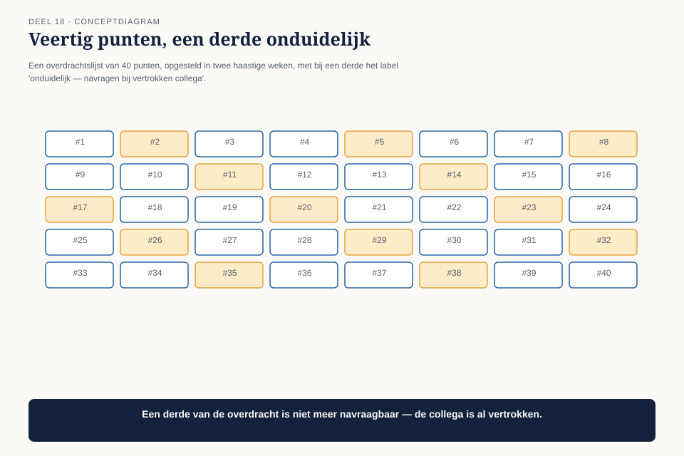

Deel 18 — Operating model II
Niveau 2 — Engagement, waarde en specialisatie | Deelnemersreader BTABoK-cursus, Ductus
18.1 Waar dit deel over gaat
Het laatste deel van het operating model gaat over wat er gebeurt met alle instrumenten die je nu hebt — het verdienmodelblad, het waarderingsblad, de stakeholderkaart, het besluitenlogboek, het kwaliteitsprofiel, de klantreiskaart, de patroonkaart — als het programma ophoudt en iemand anders het overneemt.
Vier competenties: views, kwaliteitsborging, deliverables, en repository met tooling. Ze horen samen omdat ze allemaal antwoord geven op dezelfde vraag: hoe blijft dit bruikbaar voor iemand die er niet bij was?
Aan het eind van dit deel kun je:
- een consistente set views voor een programma opzetten en onderhouden;
- kwaliteitsborging toepassen op de architectuurdocumenten zelf, niet alleen op het systeem;
- een deliverable-standaard vaststellen die door meerdere architecten hetzelfde wordt ingevuld;
- een repository inrichten die niet verweest zodra de bouwers vertrekken.
18.2 De architect die vertrekt
Een van Claudette’s twee collega’s neemt na negen maanden ontslag, om persoonlijke redenen die niets met het programma te maken hebben. In de laatste twee weken probeert het team te reconstrueren wat er in haar hoofd zat: welke besluiten ze had genomen, welke afspraken ze had gemaakt met welk team, waar haar documenten precies stonden.

Een derde van de overdrachtslijst blijft onduidelijk. Niet omdat ze slordig werkte — haar besluitenlogboek-bijdragen zijn, achteraf gezien, prima — maar omdat een deel van haar werk nooit in een vorm stond die iemand anders zonder haar kon volgen: aantekeningen in haar eigen notatie, afspraken die alleen mondeling waren gemaakt, een view die alleen in haar hoofd bestond.
18.3 Views: een consistente set, niet een persoonlijke gewoonte
De eerste competentie herhaalt het onderscheid uit deel 7 — bestuurlijk, functioneel, technisch — maar voegt er een organisatorische eis aan toe: elke architect gebruikt dezelfde drie views, in dezelfde vorm, ook als niemand het controleert.

Vóór dit deel bleek dat elk van de drie architecten “de technische view” net iets anders invulde: de een met diagrammen, de ander met platte tekst, de derde met een mix die alleen zij begreep. Dat werkte zolang iedereen aanwezig bleef. Het faalde zodra er iemand vertrok.
De correctie is geen strak sjabloon dat creativiteit doodt, maar een minimale, gedeelde structuur: voor elke view een vaste set vragen die beantwoord moet zijn, ongeacht de vorm waarin dat gebeurt.
| View | Vaste vragen die beantwoord moeten zijn |
|---|---|
| Bestuurlijk | Wat is het besluit? Wat kost het? Wat gebeurt er bij uitstel? |
| Functioneel | Wat verandert er voor wie? Vanaf wanneer? |
| Technisch | Welke onderdelen zijn betrokken? Welke aannames zijn gemaakt? Wat is expliciet niet getest? |
18.4 Kwaliteitsborging: van het systeem naar het document
De tweede competentie past het kwaliteitsdenken uit deel 8 toe op iets nieuws: niet de kwaliteit van het gebouwde systeem, maar de kwaliteit van de architectuurdocumenten zelf.

De toets: kan iemand die er niet bij was, dit document gebruiken zonder de auteur te bellen? Vijf vragen die dat toetsen:
- Bevat het document de vijf velden van het besluitenlogboek volledig, of ontbreekt er iets?
- Is het heroverwegingsmoment concreet genoeg om te herkennen (deel 7, deel 9)?
- Zijn aannames gemarkeerd als aanname, niet als feit (deel 3)?
- Bevat de bestuurlijke view geen technisch jargon (deel 7, deel 10)?
- Is er een datum en een auteur, zodat duidelijk is hoe actueel het document is?
Toegepast op de vertrokken collega’s documenten: veertien van de zesendertig documenten in haar deel van het besluitenlogboek voldeden niet aan vraag 2 — een vaag heroverwegingsmoment als “bij gelegenheid” in plaats van een concrete trigger. Dat is precies het soort gebrek dat onzichtbaar blijft zolang de auteur er nog is om het uit te leggen.
18.5 Deliverables: één standaard voor drie architecten
De derde competentie stelt een vaste vorm vast voor wat een architectuurdeliverable eigenlijk is bij Meridiaan — niet om creativiteit te beperken, maar om te zorgen dat drie architecten niet drie compleet verschillende soorten documenten opleveren voor hetzelfde soort werk.

| Type werk | Verwachte deliverable | Vaste onderdelen |
|---|---|---|
| Een architectuurbesluit | Ingevuld besluitenlogboek-item | de vijf velden uit deel 7 |
| Een nieuw ontwerptraject | Requirement + scopediagram + decompositiekeuze | de instrumenten uit deel 6 |
| Een herbruikbare oplossing | Patroonkaart | de vier velden uit deel 17 |
| Een kwaliteitsafweging | Kwaliteitsprofiel | de vijf clusters uit deel 8 |
Zelfreflectie op de vorm van deze cursus. Dit is dezelfde beweging als de vaste vier deliverables waarin deze hele cursus is opgebouwd — reader, werkboek, slidedeck, docentenhandleiding voor elk deel. Een vaste vorm is geen beperking van de inhoud; het is wat maakt dat dertig delen door verschillende docenten op verschillende momenten toch als één samenhangend geheel werken.
18.6 Repository: waar het leeft, en wie het onderhoudt
De laatste competentie gaat over de plek waar alle instrumenten samenkomen — niet als technische keuze (welk systeem, welke tool) maar als organisatorische vraag: wie zorgt dat de repository niet verweest?

De rol die ontbrak: niemand was verantwoordelijk voor het geheel. Elk instrument had een gebruiker, maar niemand had de taak om te controleren of de repository als geheel nog actueel en vindbaar was. Dat is precies waarom een derde van de overdrachtslijst onduidelijk bleef — er was geen eigenaar van het geheel, alleen eigenaren van de losse delen.
De oplossing is geen nieuwe fulltime functie, maar een expliciet toegewezen, lichte taak: één architect (bij toerbeurt) is elke maand een uur verantwoordelijk voor het doorlopen van de kwaliteitsborgingtoets uit 18.4 op recent toegevoegde documenten, en voor het signaleren van hiaten — niet voor het oplossen ervan, alleen voor het zichtbaar maken.
18.7 Wat er structureel is veranderd
Na dit deel krijgt elk nieuw architectuurdocument bij Meridiaan dezelfde vorm, ongeacht wie het schrijft. De volgende keer dat een architect vertrekt — en dat zal gebeuren, in een programma van veertien maanden met drie mensen — is de overdrachtslijst geen haastige reconstructie meer, maar een kwestie van de repository doorlopen.
18.8 Kernbegrippen
| Begrip | Betekenis in deze cursus |
|---|---|
| Consistente views | dezelfde drie views, dezelfde vaste vragen, ongeacht welke architect ze invult |
| Documentkwaliteitsborging | de toets of iemand die er niet bij was, het document kan gebruiken zonder de auteur te bellen |
| Deliverable-standaard | per type werk een vaste, verwachte vorm — dezelfde beweging als de vier deliverables van deze cursus zelf |
| Repository-eigenaarschap | een lichte, toegewezen taak om het geheel te bewaken, niet alleen de losse delen |
Volgende deel: deel 19 — Governance en roadmap (twee dagdelen). Het langst aangekondigde deel van niveau 2: de spanning tussen kaders stellen en ontwerpen, definitief uitgewerkt.